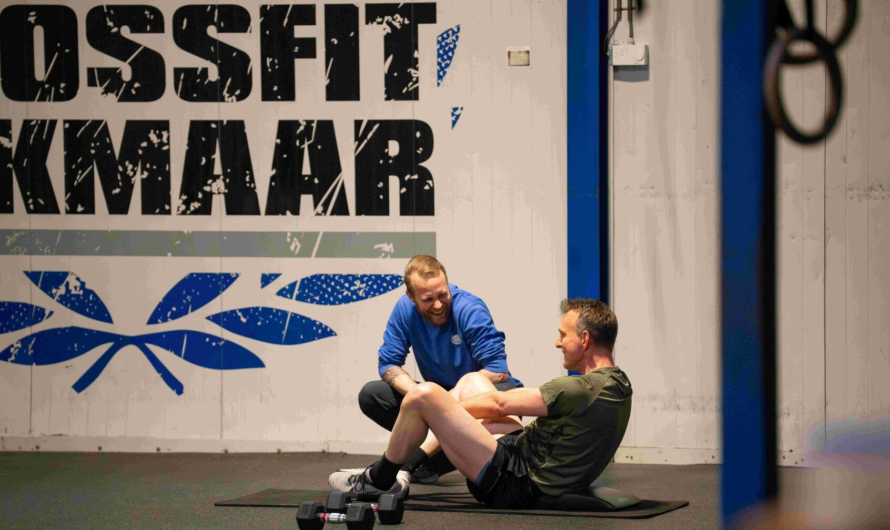

Programma
Personal Training Alkmaar
Training die volledig om jou draait. Jouw doelen, jouw schema, jouw coach.
Personal training met een plan
Personal training is meer dan een trainer die naast je staat. Bij CrossFit Alkmaar krijg je een volledig trainingsplan, afgestemd op jouw doelen. Of je nu wilt afvallen, sterker worden, revalideren of je voorbereiden op een wedstrijd.
Onze coaches zijn gecertificeerd en gespecialiseerd in functionele fitness. Ze kijken niet alleen naar je training, maar ook naar je bewegingskwaliteit, mobiliteit en, eventueel, je voeding.
Je traint in een volledig uitgeruste box met professionele apparatuur. Geen wachten op machines, geen drukte — gewoon jij en je coach.
Wat onze leden zeggen
Trainingsopties
1-op-1 sessies
Maximale aandacht en volledig gepersonaliseerd. Ideaal voor specifieke doelen, revalidatie of als je de voorkeur geeft aan privétraining.
Small Group (max 4)
De persoonlijke aanpak van PT, maar samen met een klein groepje. Betaalbaar én effectief. Bekijk onze small group training.
Combi-abonnement
Combineer personal training met groepslessen voor het beste van twee werelden. Persoonlijke aandacht én de groepsenergie.
Flexibel plannen
Plan je sessies op tijden die jou uitkomen. Wij passen ons aan jouw agenda aan, niet andersom.
Voor wie is personal training?
Voor iedereen die meer wil dan een standaard sportschool. Of je nu net begint via de Kickstart, terugkomt na een blessure, of al jaren traint maar een nieuw doel hebt: personal training geeft je de begeleiding die het verschil maakt.
Wanneer kies je personal training?
Wanneer is personal training beter dan groepslessen?
Hoe ziet een personal training sessie eruit?
Wat is het verschil tussen personal training en small group training?

'Ik voel me fit en m'n hartslag in rust is ook omlaaggegaan.'

'CFA is voor mij een veilige haven.'
Veelgestelde vragen
Wat is het verschil tussen personal training en groepslessen?
Voor wie is personal training geschikt?
Kan ik personal training combineren met groepslessen?
Hoe lang duurt een personal training sessie?
Start met personal training
Plan een gratis kennismakingsgesprek en ontdek wat personal training voor jou kan betekenen.
Plan je gratis kennismaking